Final report
Table of Contents
Exercise 1: Distributed Matrix-Matrix Multiplication
Introduction
The first assignment consists of implementing a distributed matrix-matrix multiplication, using the MPI library to communicate between processes. More precisely, 3 versions of the algorithm are required:
- a basic version with the naive algorithm (triple loop);
- an improved CPU version using BLAS library;
- a GPU version using CUDA and CUBLAS library.
Before digging into the implementation of the three versions, let’s first describe the problem and how to solve it.
Matrix-Matrix Multiplication using MPI
Matrix-matrix multiplication is a fundamental operation in linear algebra and a good exercise to implement in a distributed environment. It consists in computing \(C=A\times B\), where A is a \(m\times n\) matrix, B is a \(n\times l\) matrix and the output \(C\) is a \(m\times l\) matrix. The implementation of a distributed matrix-matrix multiplication lies on two main concepts:
- matrices are saved by rows in contiguous memory;
- each of the three matrices is distributed among the processes.
For this assignment, we will consider the matrices to be distributed by rows among the processes, hence each process will have a submatrix, which we will call myA, myB and myC, with a fixed number of rows of each matrix (equal to the number of rows of the entire matrix divided by the number of processes). Since in general the number of rows of the matrices is not divisible by the number of processes, some processes will actually have one more row than the others:


The idea to compute the product is the following: iterate over the number of processes: at each iteration, each process:
- re-builds a group of columns of \(B\), named
columnB, by gathering the necessary part from all the other processes; - computes
myCBlock = myA × columnB; - places
myCBlockinmyC: the union of themyCBlocks of the current iteration will give a group of columns of the final matrix \(C\).
Essentially, \(C\) matrix is built by columns: at iteration i+1, for i=0,...NPEs-1, each process computes its myNRows rows of a block of \(k\) columns, where \(k\) is the worksize of the i-th process.
For example, the product in the picture above is computed in 3 iterations, as:

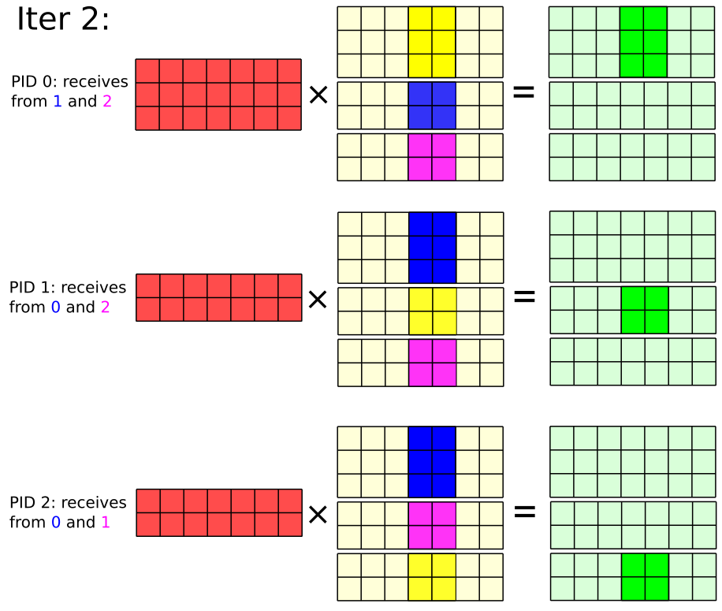
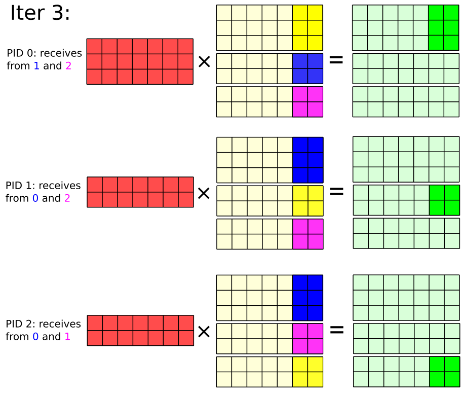
where columnB is made by the current process part, in yellow, and the parts sent by the other two processes, in blue and pink, and myCBlock, in green, is computed and placed in the correct position in myC. Note that no process will ever store any of the matrices in their entirety, but only the part they need to compute their part of the product.
The code that executes the iterations is:
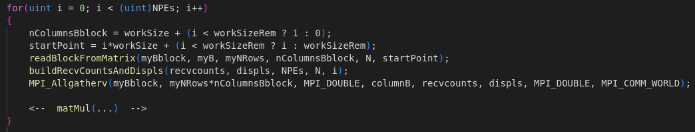
Where the matMul part branches according to the version of the algorithm we are implementing. Let’s have a look at some details about the three versions.
CPU baseline: naive algorithm
The basic version of the algorithm is the naive implementation of the matrix-matrix multiplication, using the triple loop:

startPoint is a shift that allows to directly position the computed values in myC, without using the support matrix myCBlock. Except for this, the code is straightforward: each process computes its myCBlock, with size myNRows x nColumnsBblock, by iterating over the rows of myA and the columns of columnB.
CPU improvement: BLAS
The improved CPU version uses the BLAS library to compute the matrix-matrix multiplication.
The BLAS library is “…a specification that prescribes a set of low-level routines for performing common linear algebra operations such as vector addition, scalar multiplication, dot products, linear combinations, and matrix multiplication… (from Wikipedia)”, and constitutes the de-facto standard for linear algebra libraries.
The routine we are interested in is dgemm, which computes the matrix-matrix product of two matrices with double-precision elements. The code here is just a little bit more complex than the basic version: product and myCBlock placement are split in two different steps:
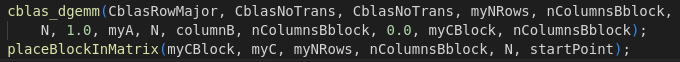
We first compute the product and store it in myCBlock, then we place myCBlock in myC using the startPoint shift.
Notice that we are specifying to dgemm that we don’t want to transpose the matrices. This is done since we want to settle in a scenario were the original matrices are already given, all in the same format (a fixed number of rows for each process), hence gathering is necessary to perform the product.
GPU version
GPU execution, which is done with CUDA and CUBLAS library, requires one more step with respect to the previous version:

We first copy columnB to the GPU, then we compute the product and place it in myCBlock as in the previous case. Some interesting points to notice are:
- all the matrices have already been preallocated on the GPU at the beginning of the execution, hence the only thing we are missing is the copy of
columnB, which is built on the CPU at each iteration and then moved to the GPU; cublasDgemm, the CUBLAS routine that performs the product, takes as input the matrices in column-major format by default, and we don’t want to transpose them to avoid losing performances, hence we perform the product in the inverse order, exploiting the fact that \(C=A\times B\) is equivalent to \(C^T=B^T\times A^T\): in this way the product output, which is saved inmyCBlock_dev, is already in the correct format to be placed inC_dev(the GPU memory location ofmyC), but you must be careful to correctly set the leading dimensions of the matrices in thecublasDgemmcall;- to access
myCBlock_devand to modifyC_devwe need to use a kernel function, since we are working on the GPU. Hence, we are working exclusively on the GPU for the product and the placement ofmyCBlock_devinC_dev: only at the end of the programC_devis copied back to the CPU.
Results
In this section we will analyze the results of the three versions of the algorithm. The code has been run on the Leonardo cluster, with up to 16 MPI tasks allocated one per node, for CPU versions, and up to 32 MPI tasks allocated four per node, one per GPU card, for the GPU version. The matrices have been generated randomly at each run and the execution time has been measured with the MPI_Wtime function. The tests have been done on matrices of various sizes, in order to compare CPU and GPU performances and also evaluate the scalability. The maximum time among all the MPI processes has been plotted. However, I have also collected data regarding the average time and they have showed the same behavior, meaning the workload is correctly distributed among the processes, for this reason they have not been plotted.
To easily identify the different parts of the code and plot them I have used some terms, here a brief explanation of them is given, in order of appearance in the code:
initCuda: initialization of Cuda, withcudaGetDeviceCountandcudaSetDevice;init: initialization of the three matrices (done on CPU);initComm: initialization ofmyBblock,recvcountsanddisplsfor the communication;resAlloc: everything related to the allocation of the matrices, both on CPU and on GPU (hencemalloc,cudaMalloc,cublasCreateandcudaMemcpy);gather: gathering ofmyBblockintocolumnBfrom all the processes;dGemm: computation of the product, with triple loop (naive),cblas_dgemm(cpu) orcublasDgemm(gpu);place: placement ofmyCBlockinsidemyC.
CPU - Naive
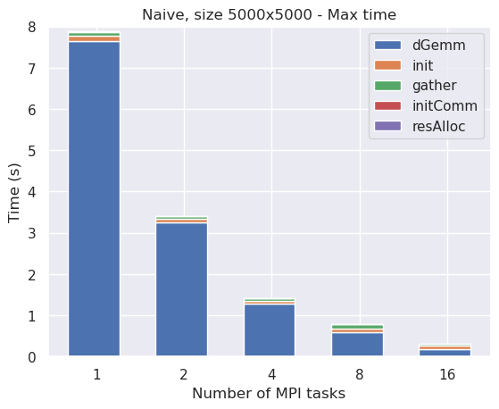
As we can see, almost all the execution time is occupied by the computation of the product. Let’s try to remove it to see how the other parts behave:

Excluding dGemm time, init and gather seem to be the most time consuming parts of the code (still nearly 2 orders of magnitude far from product part though). init is scaling a bit, but the matrix is way too small to expect something better.
In order to understand how the code scales with the size, let’s also have a look at the results for 10000x10000 matrices: since the algorithm complexity is \(O(N^3)\), we expect dGemm part to grow about 8 times:
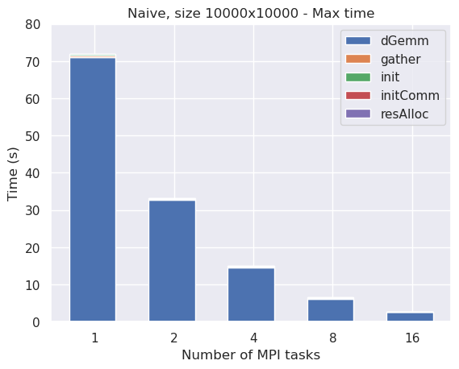
Without the product part:
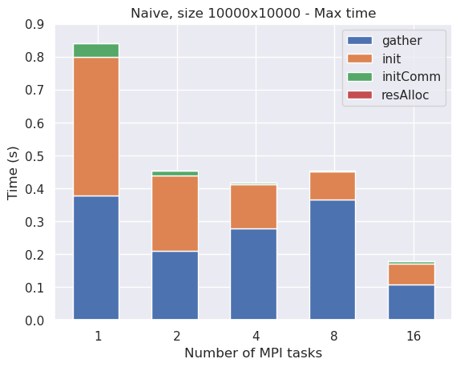
init seems now to scale pretty well, as expected.
CPU - BLAS
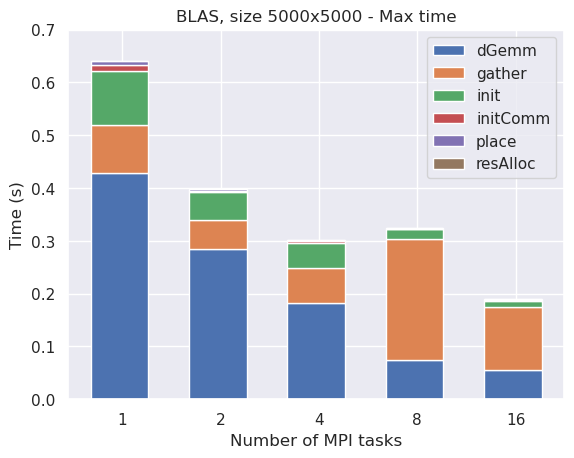
Also in this case, dGemm is the most time consuming part of the code, as we would expect. However, dGemm time is now ~20 times smaller than in the naive case, hence gather and init become quite significant now.
Notice that:
placetime was not present in the naive case, since the product was directly placed inmyC, while in this case we first compute the product and then place it inmyC. However, the time spent inplaceis negligible with respect to the time spent indGemm,initandgather;- for both naive and CPU version,
resAlloctime is practically zero, since the matrices are allocated only in the CPU. We’ll see that this won’t be the case in the GPU version.
Let’s see how the code scales with the size:

Results are a bit better than before but gather is still quite impactant. Let’s try with bigger matrices:
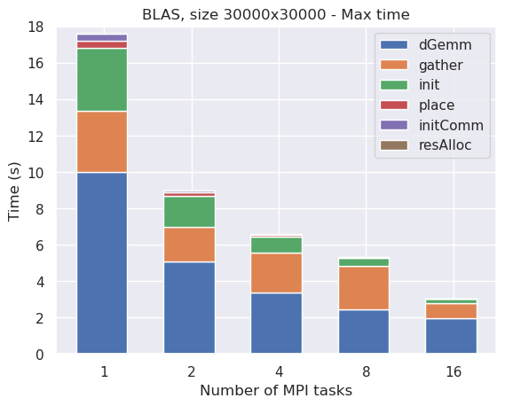
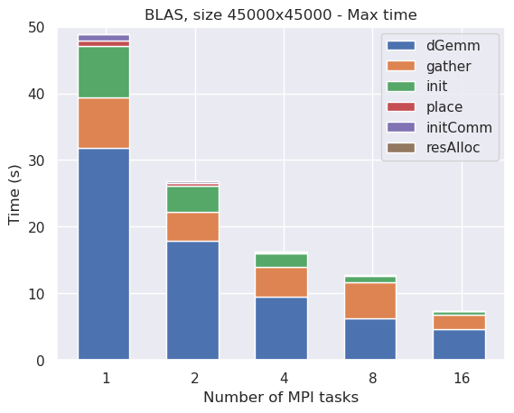
As we can see, with bigger matrices we are able to obtain a pretty decent scalability, although the gather part becomes quite impactant at large number of processes, thus becoming the real bottleneck as we would expect.
GPU
Finally, let’s analyze the GPU version: first of all, let’s see the results for the 5000x5000 matrices in order to compare them with the previous cases:
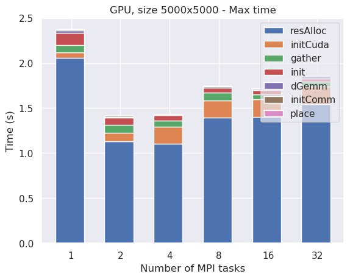
As we can see, the most time consuming part of the code is resAlloc, this means we are spending most of the time in moving the matrices from CPU to GPU and back: the matrices are far too small to expect a good speedup from the GPU.
Let’s increase the matrix size:
More or less the same results as before, but we can start to appreciate a bit of speedup.
Let’s now analyze the results for the 45000x45000 matrices:
By looking at the results of the measurements, we immediately spot two things:
initanddGemmtake more or less the same time, although the latter is much more computationally intensive than the former, sinceinitis performed on the CPU, whiledGemmis performed on the GPU;gatherandresAllocare still quite relevant, especially with 16 and 32 MPI tasks (corresponding to 4 and 8 nodes).
Comparison
Let’s compare the results obtained by the three algorithms:
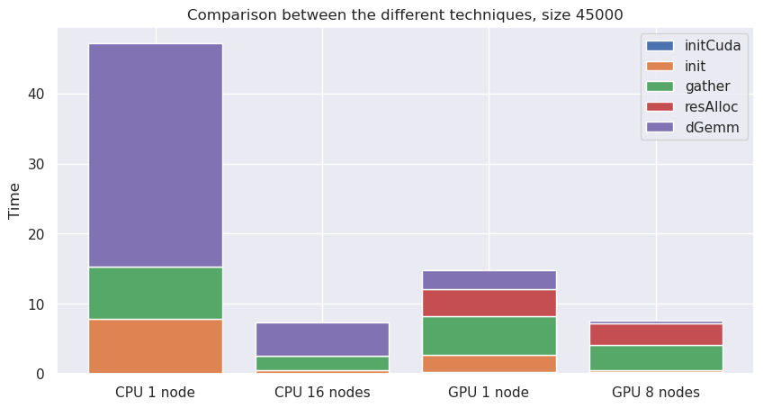
How to run
A Makefile is provided to easily compile and run the code. The available targets are:
make naive: produce an executable running with the naive algorithm (triple loop);make cpu: produce an executable running with the BLAS library (requires BLAS, on Leonardo you can load it withmodule load openblas/0.3.24--nvhpc--23.11);Note: Leonardo also provides the
openblas/0.3.24--gcc--12.2.0module, but this version is not able to executecblas_dgemmroutine in parallel, hence we wouldn’t be able to exploit the full potential of the CPU;make gpu: produce an executable running with CUDA and CUBLAS library (requires CUDA and CUBLAS, in Leonardo they are included in thenvhpcmodule which also provides a CUDA-Aware MPI library);make clean: remove all the executables and the object files.
After compilation, the executables can be run with mpirun -np <np> ./main <size>.
The Makefile also provides some shortcuts to directly compile and run the code:
make naiverun NP=<np> SZ=<size>: equivalent tomake clean && make naive && mpirun -np <np> ./main <size>;make cpurun NP=<np> SZ=<size>: equivalent tomake clean && make cpu && mpirun -np <np> ./main <size>;make gpurun NP=<np> SZ=<size>: equivalent tomake clean && make gpu && mpirun -np <np> ./main <size>.
Exercise 2: Jacobi’s Algorithm with OpenACC
Introduction
The second assignment consists of implementing the Jacobi’s method to solve Laplace equation in a distributed memory environment, using the MPI library to communicate between processes and OpenACC to parallelize the computation on GPU. The program is expected to run entirely on GPU, without any data transfer between CPU and GPU in the middle of the computation.
Before digging into the implementation of the algorithm, let’s first describe the problem and how to solve it.
Jacobi’s algorithm
Laplace’s equation is a second-order partial differential equation, often written in the form
\[ \nabla^2 V = 0 \]
where \(V\) is the unknown function of the spatial coordinates \(x\), \(y\), and \(z\), and \(\nabla^2\) is the Laplace operator. The Laplace equation is named after Pierre-Simon Laplace, who first studied its properties. Solutions of Laplace’s equation are called harmonic functions and are important in many areas of physics, including the study of electromagnetic fields, heat conduction and fluid dynamics. In two dimensions, Laplace’s equation is given by
\[ \frac{\partial^2 V}{\partial x^2} + \frac{\partial^2 V}{\partial y^2} = 0 \]
whose solution can be iteratively found through Jacobi’s method: if we discretize the domain in a grid of points, the value of each point can be updated as the average of its neighbors. The algorithm is as follows:
initialize two matrices as in the following picture: the first matrix is filled with zeros, the second one with \(0.5\), both with the same boundary conditions: \(0\) in the upper and right boundaries, \(100\) in the lower left corner, with increasing values starting from that corner and getting farther from it along the left and lower boundaries:
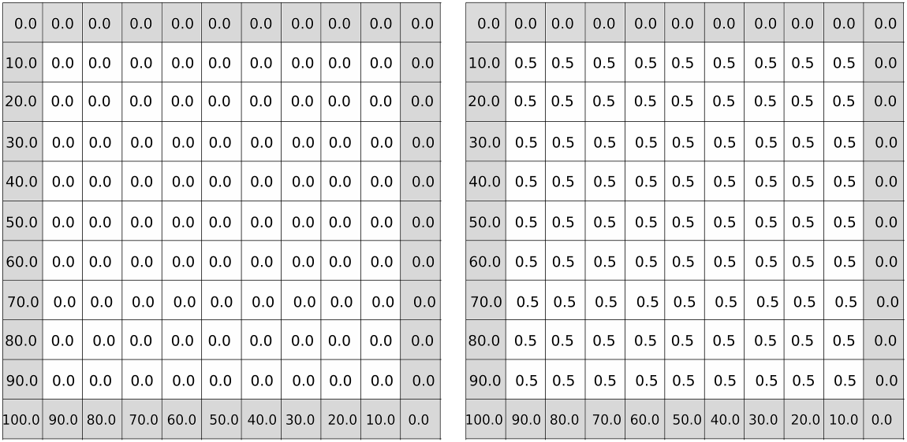
Matrices initialization Iterate over the grid points, updating each internal point of the first matrix as the average of its neighbors in the second matrix:
\[ V_{i,j}^{k+1} = \frac{1}{4} \left( V_{i-1,j}^k + V_{i+1,j}^k + V_{i,j-1}^k + V_{i,j+1}^k \right) \]
- Swap the pointers of the two matrices and repeat points 2 and 3 until a desired convergence criterion is met.
The following gif shows the evolution of the matrix during 100 iterations:

Distribute the domain: MPI
Since at each iteration each point is updated independently on the others (we only need their old value, which is constant during the update), this algorithm clearly opens the door to parallelization: each process can be assigned a subgrid of the domain, and the communication between processes is only needed at the boundaries of the subgrids.
In this assignment, we will consider the domain to be distributed by rows among multiple MPI processes, hence each process will have a subgrid with a fixed number of rows of the entire grid (equal to the total number of rows divided by the number of processes, plus two more rows, one above and one below, that will be needed to perform the update). Since in general the number of rows of the grid is not divisible by the number of processes, some processes will actually have one more row than the others:

For example, if dim\(=9\) and NPEs\(=3\), we have the situation showed in the following picture:

The idea to compute the solution is the following: each process will have two submatrices with myWorkSize = 9/3 + 0 + 2 = 5 rows, also considering the 2 ghost rows, one above and one below, to perform the update. Each process only initializes and updates the internal rows of one submatrix, and then exchanges the boundary rows with the neighbor processes. More precisely, each process first initializes its own submatrices and then continuously:
updates the values of the internal points (hence excluding its first and last row and the first and last column) of one submatrix using the values from the other one:

Matrix update updates the boundaries: it sends its second row to the upper process and its semilast row to the lower one, and receives its first row from the upper process and its last row from the lower one (first and last process only put a single row, since the other one is a fixed boundary condition):
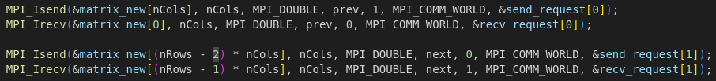
Rows exchange between processes swaps the pointers to the matrices, so that the new matrix becomes the old one and vice versa;
until a desired convergence criterion is met.
Move to GPU: OpenACC
The Jacobi’s method is a perfect candidate for GPU acceleration, and OpenACC offers simple and powerful instruments to do so. The idea is to generate a data region to allocate the matrix on the GPU and perform both initialization and updates there, and then copy it back to the CPU:

Both initialization and update can then be parallelized using the parallel loop directive:
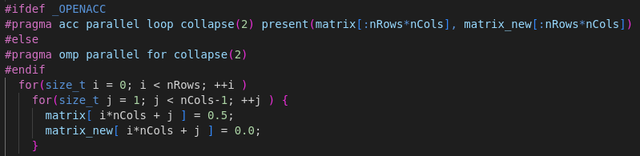
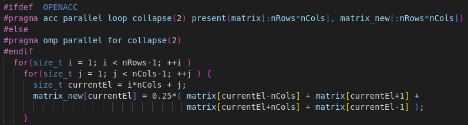
Also, in order to execute the the rows exchange directly between GPUs, acc host_data use_device directive has been used:

Results
In this section we will analyze the performances obtained by the algorithm, both on CPU and on GPU. The code has been run on the Leonardo cluster, with up to 16 MPI tasks allocated one per node, for CPU versions, and up to 32 MPI tasks allocated four per node, one per GPU card, for the GPU version. The execution time has been measured with the MPI_Wtime function. The tests have been done with a matrix of size 1200x1200 and 12000x12000, with 10 evolution iterations, and 40000x40000, with 1000 iterations, to better study the scalability. The maximum time among all the MPI processes has been plotted. However, I have also collected data regarding the average time and they have showed the same behavior, meaning the workload is correctly distributed among the processes, for this reason they have not been plotted.
To easily identify the different parts of the code and plot them I have used some terms, here a brief explanation of them is given, in order of appearance in the code:
initacc: initialization of OpenACC, withacc_get_num_devices,acc_set_device_numandacc_init;copyin: enter the data region, allocate the matrices on GPU;init: initialization of the matrices;update: total time spent on updating the matrix;sendrecvtotal time spent on exchanging the ghost rows;save: save the matrix on file using MPI-IO;copyout: copying the output matrix from GPU to CPU.
Note: to further improve performances on CPU, OpenMP is used to parallelize both the initialization and the update of the matrices when GPUs are not available.
CPU
Let’s start with the CPU version:

As we can see, there is basically no scalability due to the very low time spent. init takes almost all the time, with update being practically irrelevant due to the very low number of updates done.
Let’s see how things change with a larger matrix:
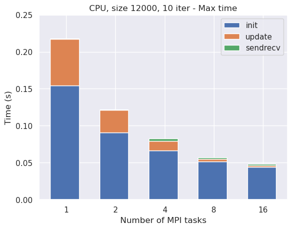
We can start to appreciate some speedup, and the time spent on update is now relevant, although init is still the most time-consuming part of the code, but scalability still almost interrupts after 4 tasks.
Let’s see what happens with a much larger matrix and more iterations:

We can finally appreciate a great scalability, with the time spent on update being the most relevant part of the code, as we would expect.
GPU
Let’s now move to the GPU version:
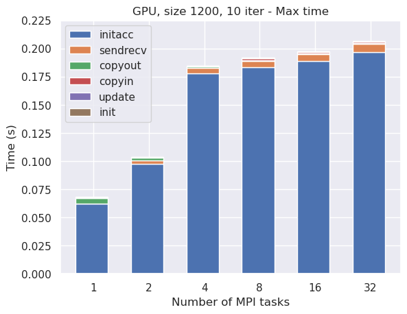
As we can see, it is totally pointless to run the code on GPU with such a small matrix, since most of the time is spent on initacc, hence we would get no speedup at all. Let’s see what happens with a larger matrix:
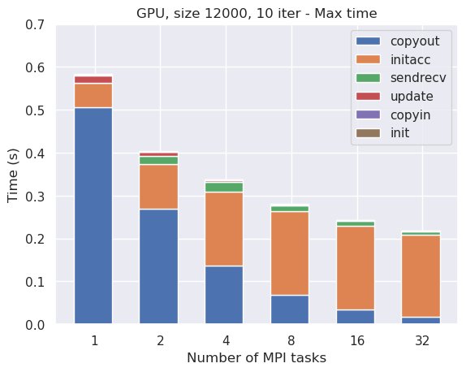
We can start to appreciate some speedup, but the time spent on initacc is still relevant and most of the time is spent in copyout (with less tasks) or still in initacc (with more tasks), with init and update being basically negligible. This is due to the fact that the workload is too small to fully exploit the power of the GPU. Let’s then try to run the code with a much larger matrix and many more iterations, in order to increase the workload:
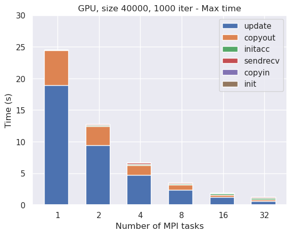
We can finally appreciate a significant speedup even with a large number of MPI tasks: the time spent on initacc is now negligible with respect to the other parts of the code and most of the time is now spent on the update, as we would expect.
Comparison
Let’s now compare the CPU and GPU versions with the same matrix size and number of iterations:
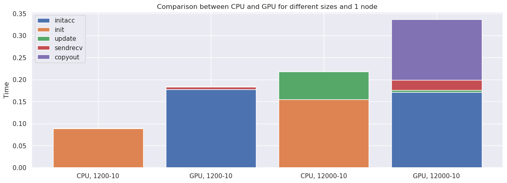
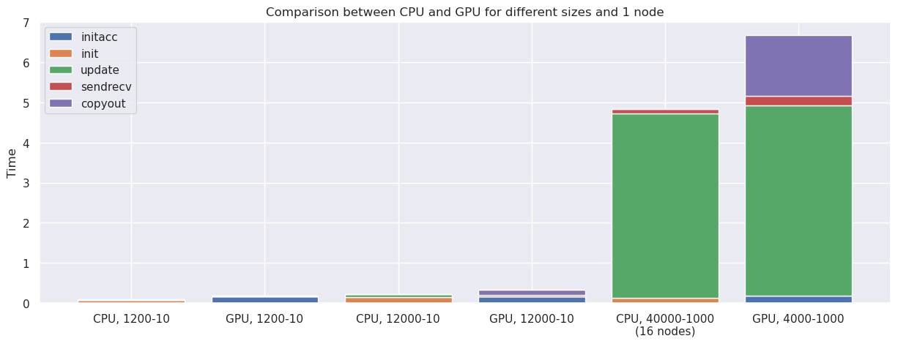
As we can see, if with a small matrix the GPU version is not convenient at all, with a larger matrix we can appreciate a significant boost in performances.
Save time
Up to now we have ignored the save time, let’s now see how it affects the performances: since it is not influenced by GPU acceleration, we’ll just compare it with other parts of the code in order to understand its magnitude:
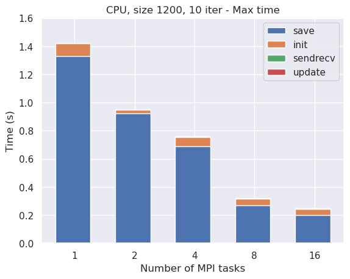
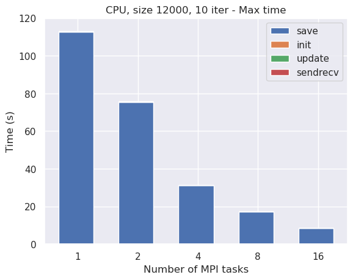
As we can see, using MPI-IO we are able to save some time writing on file in parallel, but this is still by far the most time-consuming part of the code.
How to run
Disclaimer:%pu...means that the target exists both ascpu...andgpu...
A Makefile is provided to easily compile and run the code. The available targets are:
make %pu,make %pusaveandmake %pugif: produce an executable running on CPU with OpenMP or on GPU with OpenACC, the second one also saves the final matrix in a filesolution.dat, while the third one saves the entire evolution of the matrix in multiple.datfiles;make plot: produce a plot using Gnuplot: if the code has been compiled with thesaveoption, it will plot the final matrix in a filesolution.png, while with thegifoption it will plot a gif with the evolution of the matrix in a filesolution.gif;make clean: remove all the executables and the object files.
After compilation, the executables can be run with mpirun -np <np> ./jacobi.x <size> <nIter>.
The Makefile also provides a shortcut to directly compile and run the code and save the output: make %purun NP=<np> SZ=<size> IT=<nIter>, equivalent to make clean && make %pusave && mpirun -np NP ./jacobi.x SZ IT && make plot;
Check correctness
In order to check correctness of the obtained output, the original serial code is provided in original_code folder, and a special target can be used to directly compare the output of the original code with the one of the optimized code: make compare%pu NP=<nProc> SZ=<size> IT=<nIter> This target will compile and run both the original and the optimized code (with the given number of processes, size and number of iterations, on CPU or GPU), save the outputs in binary format, and compare them using Unix command diff: if the outputs are identical, as expected, no output will be produced, otherwise the output will be
Binary files output/solution0.dat and original_code/solution.dat differNote: to directly compare the two files without having to worry about precision issues, the original code save_gnuplot function has been modified to save binary files; this is the only change that has been performed on it.
Note: MPI-IO writes binary files and does not truncate the file on which it’ll write if it already exists: if you want to run the program with a size which is smaller than the previous one,make cleanor empty theoutputfolder before running, in order to generate it from scratch instead of overwriting it.compare%putargets are already provided with an internalclean, in order to repeatedly compare results without having to worry about non-truncated files.
Exercise 3: Jacobi’s Algorithm with One-Sided MPI
Introduction
The third assignment consists of implementing the Jacobi’s method to solve Laplace equation in a distributed memory environment, using the MPI library to communicate between processes in a one-sided fashion.
Before digging into the implementation of the algorithm, let’s first describe the problem and how to solve it.
Jacobi’s algorithm
Laplace’s equation is a second-order partial differential equation, often written in the form
\[ \nabla^2 V = 0 \]
where \(V\) is the unknown function of the spatial coordinates \(x\), \(y\), and \(z\), and \(\nabla^2\) is the Laplace operator. The Laplace equation is named after Pierre-Simon Laplace, who first studied its properties. Solutions of Laplace’s equation are called harmonic functions and are important in many areas of physics, including the study of electromagnetic fields, heat conduction and fluid dynamics. In two dimensions, Laplace’s equation is given by
\[ \frac{\partial^2 V}{\partial x^2} + \frac{\partial^2 V}{\partial y^2} = 0 \]
whose solution can be iteratively found through Jacobi’s method: if we discretize the domain in a grid of points, the value of each point can be updated as the average of its neighbors. The algorithm is as follows:
initialize two matrices as in the following picture: the first matrix is filled with zeros, the second one with \(0.5\), both with the same boundary conditions: \(0\) in the upper and right boundaries, \(100\) in the lower left corner, with increasing values starting from that corner and getting farther from it along the left and lower boundaries:

Matrices initialization Iterate over the grid points, updating each internal point of the first matrix as the average of its neighbors in the second matrix:
\[ V_{i,j}^{k+1} = \frac{1}{4} \left( V_{i-1,j}^k + V_{i+1,j}^k + V_{i,j-1}^k + V_{i,j+1}^k \right) \]
- Swap the pointers of the two matrices and repeat points 2 and 3 until a desired convergence criterion is met.
The following gif shows the evolution of the matrix during 100 iterations:
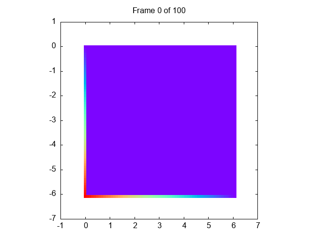
Distribute the domain: MPI
Since at each iteration each point is updated independently on the others (we only need their old value, which is constant during the update), this algorithm clearly opens the door to parallelization: each process can be assigned a subgrid of the domain, and the communication between processes is only needed at the boundaries of the subgrids.
In this assignment, we will consider the domain to be distributed by rows among multiple MPI processes, hence each process will have a subgrid with a fixed number of rows of the entire grid (equal to the total number of rows divided by the number of processes), and two more rows, needed to perform the update, open for the other processes to access and update them through the use of two MPI_Win objects. Since in general the number of rows of the grid is not divisible by the number of processes, some processes will actually have one more row than the others.
For example, if dim\(=9\) and NPEs\(=3\), we have the situation showed in the following picture:

The idea to compute the solution is the following: each process has two submatrices with myWorkSize = 9/3 + 0 = 3 rows, and 2 more rows to perform the update. Each process only initializes and updates one submatrix and then puts its first and last row inside the neighbor processes’ windows. More precisely, each process first initializes its own submatrices and its extra rows, and then continuously:
updates the values of the internal points of one submatrix (hence excluding its first and last row and the first and last column) using the values from the other one:
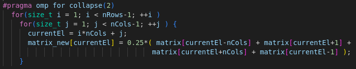
Matrix update updates the first and last row of the same submatrix, using the other one and the extra rows:
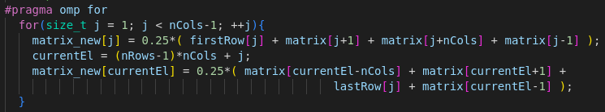
Extra rows update puts the first row of the submatrix inside the upper process’ second window and the last row of the submatrix inside the lower process’ first one (first and last process only put a single row, since the other one is a fixed boundary condition):

Put the updated rows inside the neighbor windows swaps the pointers to the matrices, so that the new matrix becomes the old one and vice versa;
until a desired convergence criterion is met.
Results
In this section we will analyze the performances obtained by the algorithm. The code has been run on the Leonardo cluster, with up to 16 MPI tasks allocated one per node. The execution time has been measured with the MPI_Wtime function. The tests have been done with a matrix of size 1200x1200 and 12000x12000, with 10 evolution iterations, and 40000x40000, with 1000 iterations, to better study the scalability. The maximum time among all the MPI processes has been plotted. However, I have also collected data regarding the average time and they have showed the same behavior, meaning the workload is correctly distributed among the processes, for this reason they have not been plotted.
To easily identify the different parts of the code and plot them I have used some terms, here a brief explanation of them is given, in order of appearance in the code:
initPar: parameters and windows initialization;init: initialization of the matrices;update: total time spent on updating the matrix;commtotal time spent on updating the extra rows;save: save the matrix on file using MPI-IO.
We’ll also plot the results obtained with the standard Send/Recv communication, in order to compare the performances of the two methods.
Let’s start with the results obtained with the 1200x1200 matrix:
| One-sided communication | Send-Recv communication |
|---|---|
| 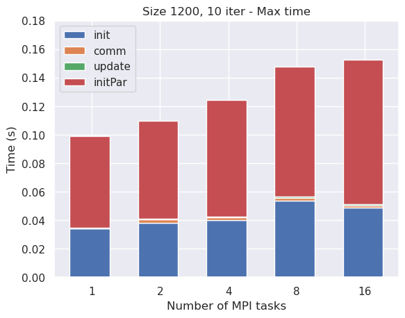 | |
As we can see, there is no scalability due to the very low time spent: initPar takes more than half of the total time, and the time spent on update is negligible. Similar results were obtained with the standard Send/Recv communication, but in that case init was the only relevant part of the code.
Let’s see how things change with a larger matrix:
| One-sided communication | Send-Recv communication |
|---|---|
| 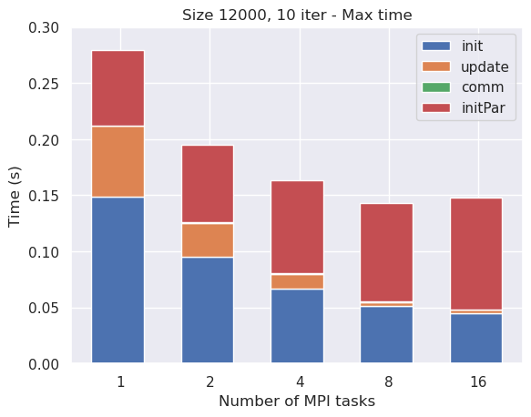 |
With a larger matrix we can start to appreciate some speedup, and the time spent on update is now significant, although initPar is still very relevant. We can observe as both the init and update parts of the code behave very similarly to the standard Send/Recv communication, but in that case the scalability is much better since there is no windows initialization.
Let’s see what happens with a much larger matrix and more iterations:
| One-sided communication | Send-Recv communication |
|---|---|
| 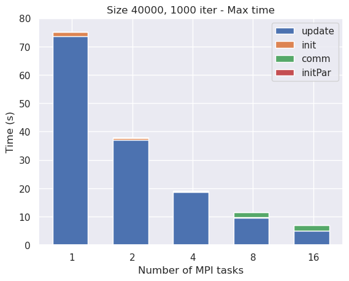 | |
We can finally appreciate a great scalability, with the time spent on update being the most relevant part of the code, as we would expect. update time is basically the same for both the one-sided and the standard Send/Recv communication, let’s see how the other parts behave:
| One-sided communication | Send-Recv communication |
|---|---|
| 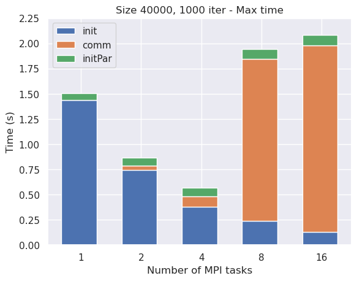 |  |
init still shows the same behavior in the two cases, while the communication time is far worse with the one-sided communication, especially with higher number of tasks.
Save time
Up to now we have ignored the save time, let’s now see how it behaves compared to the other parts of the code:


As we can see, using MPI-IO we are able to save some time writing on file in parallel, but the time spent on this part is still by far the most time-consuming part of the code.
How to run
A Makefile is provided to easily compile and run the code. The available targets are:
make: produce an executable that prints the elapsed times;make save: produce an executable that also saves the final matrix in a filesolution.dat;make gif: produce an executable that also saves the evolution of the matrix in multiple.datfiles;make plot: produce a plot using Gnuplot: if the code has been compiled with thesavetarget, it will plot the final matrix in a filesolution.png, while with thegifoption it will plot a gif with the evolution of the matrix in a filesolution.gif, both in theoutputfolder;make clean: remove all the executables and the object files.
After compilation, the executables can be run with mpirun -np <np> ./main <size> <nIter>.
The Makefile also provides a shortcut to directly compile and run the code and save the output: make run NP=<np> SZ=<size> IT=<nIter>, equivalent to make clean && make save && mpirun -np NP ./jacobi.x SZ IT && make plot.
Check correctness
In order to check correctness of the obtained output, the serial code is provided in original_code folder, and a special target can be used to directly compare the output of the original code with the one of the optimized code: make compare NP=<nProc> SZ=<size> IT=<nIter> This target will compile and run both the original and the optimized code (with the given number of processes, size and number of iterations), save the outputs in binary format, and compare them using Unix command diff: if the outputs are identical, as expected, no output will be produced, otherwise the output will be
Binary files output/solution0.dat and original_code/solution.dat differSide note: MPI-IO writes binary files and does not truncate the file on which it’ll write if it already exists: if you want to run the program with a size which is smaller than the previous one, delete thesolution.datfile before running, in order to generate it from scratch instead of overwriting it.comparetarget is already provided with an internalclean, in order to repeatedly compare results without having to worry about non-truncated files.